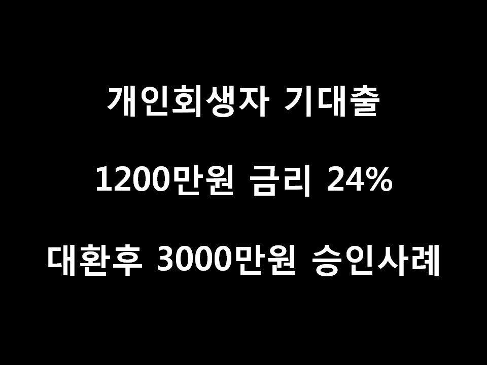
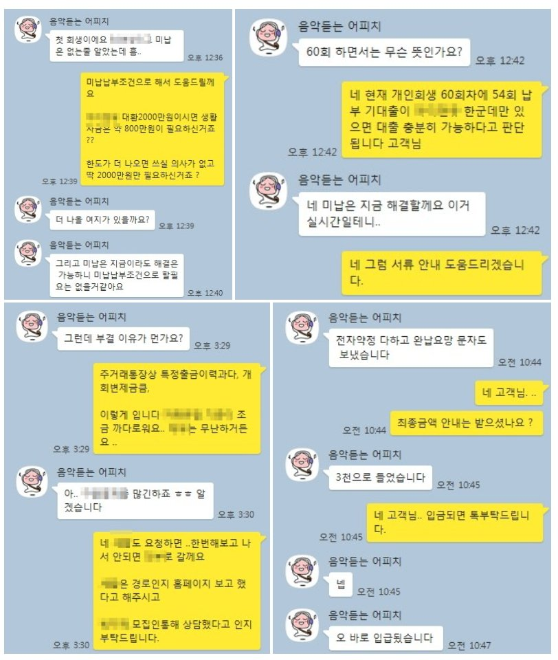

4대보험 개인회생 직장인 24% 금리 대환조건 3000만원 대출 승인사례!!

안녕하세요 뱅크앤론 회원여러분 ..김한수 상담사입니다. ^^
오늘은 회생자 대출 사례를 안내해 드리겠습니다... 고객님께서는 금융업에 재직중인 4대보험 가입되어 있는 직장인입니다.
7월달부터 금리인하가 되어서 ... 기존 24% 금리를 사용중이여서 .대환및 추가자금 2000만원 필요해서 문의주셨습니다.
개인회생 조건으로는 60회차/54회 미납2 변제금 155만원 이시고 기대출은 1200만원 가지고 있었습니다.
고객님께서는 소득도 있고 해서 좀 더 낮은 금리통해 2군데 금융사 통해 개인회생 심사 받아본 결과
D금융사는 통장내역에 특정업체 출금내역이 많아서 부결 S금융사 경우 2000만원보다 더 많이 나온 3000만원 승인되셨습니다. ^^
기존에 있던 1200만원 24% 대환하고 변제금 2회 납부한후 생활자금 1500만원 낮은 금리로 도움 드렸습니다.
아래는 저와 고객님의 대화내용입니다. 회생대출 필요하실때 문의주시면 금융사 통해서 도움드리겠습니다. 감사합니다.
이번 8월달도 화이팅해요 ..^^
